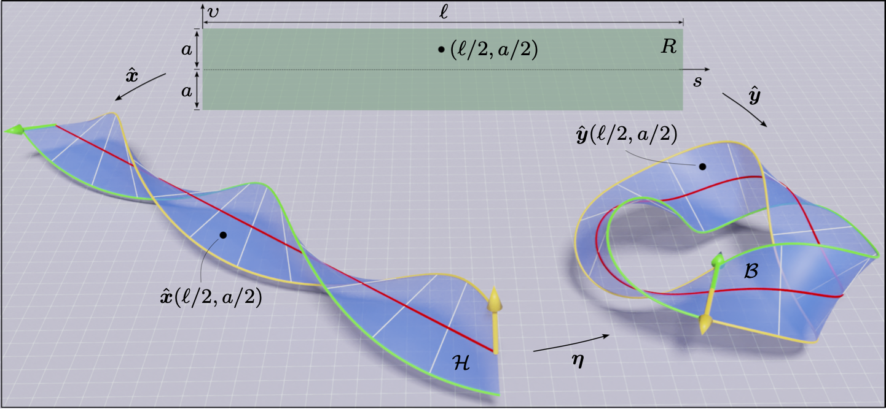
Folding of an unstretchable circular helicoid, parameterized by \(\hat{\boldsymbol{x}} \) in to a \(3\pi\) twisted Möbius band, parameterized by \(\hat{\boldsymbol{y}} \) through an isometric mapping \(\eta\), see Chaurasia and Fried (2023) for more details.
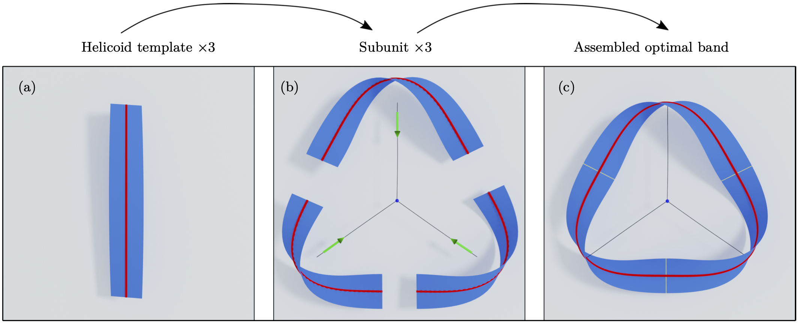
Three identical helicoids with appropriate twists can be glued to construct a 3-fold symmetric Möbius band with 3\(\pi\) twists.
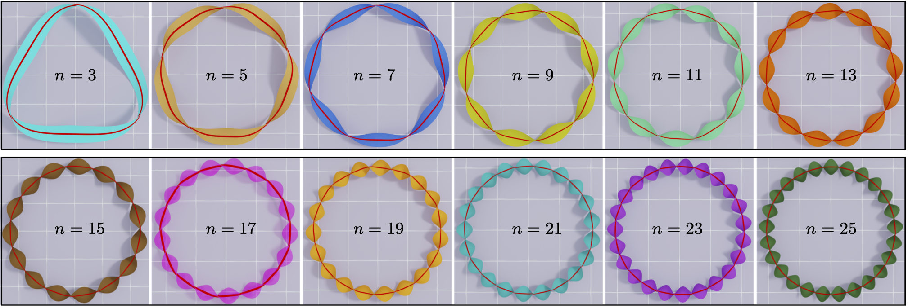
Energetically stable symmetric Möbius bands from folding of unstretchable helicoids.
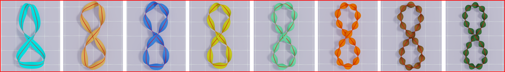
Energetically stable figure-8 Möbius bands from folding of unstretchable helicoids.

Energetically saddle knotted Möbius bands from folding of unstretchable helicoids.
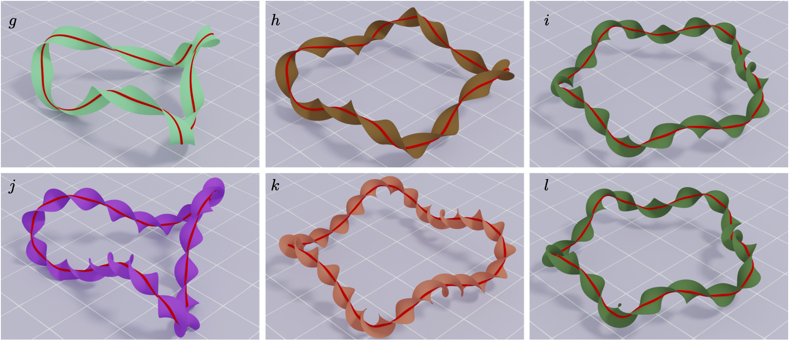
Energetically saddle unknotted Möbius bands from folding of unstretchable helicoids.
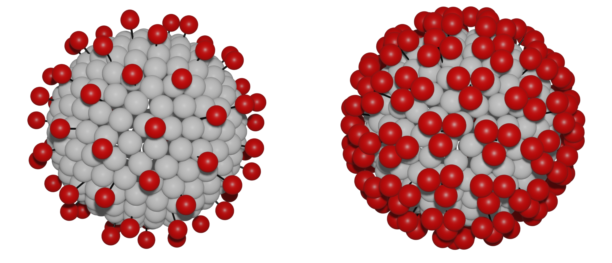
Single-bead and three-bead (triangular shape) model of the spike protein of Covid-19 on a spherical core.
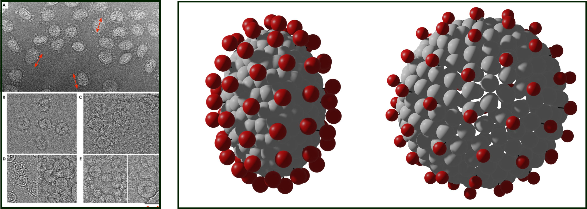
Left:experimental images of coronavirus core by Neuman et al. (2006) showing aspherical core. Right: prolate and oblate core models of coronavirus.
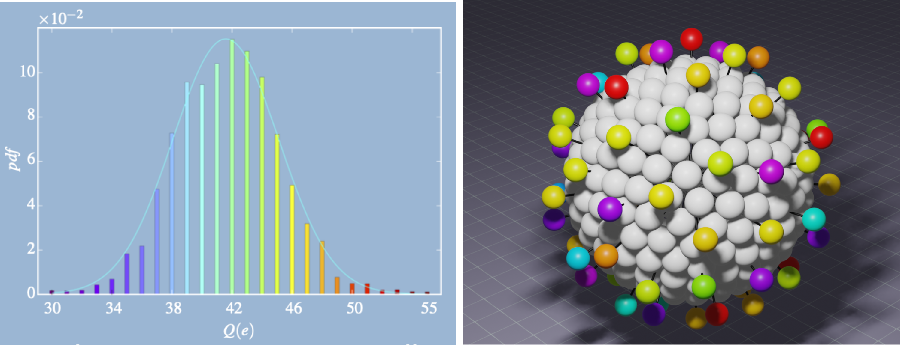
Left: mass spectroscopy measurement of charge heterogeneity of spike proteins on SARS-CoV-2 spike proteins by Miller et al. (2006). Right: rigid-rod bead model of spike proteins with charge heterogeneity, shown with different colors, by Chaurasia et al. (2023).
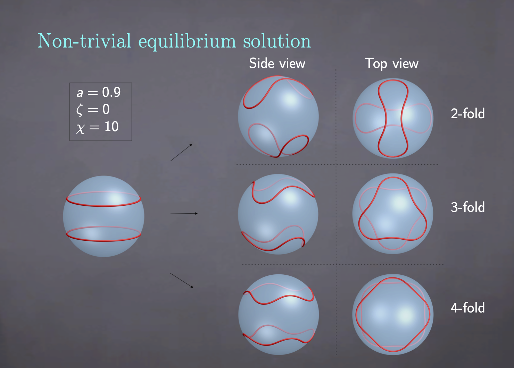
Two charged, elastic loops, attached to a
rigid sphere can adopt multiple equilibrium configurations, depending on the length of the loops
, and intra- and inter-loop interactions.
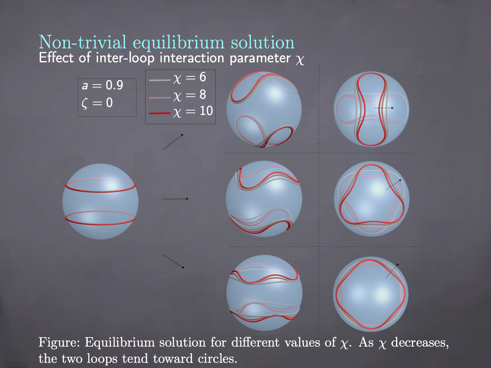
Increase in the inter-loop charge density \(\chi\) on the loops increases inter-loop repulsion, yielding "squeezed" loops to maximize distance between the loops.
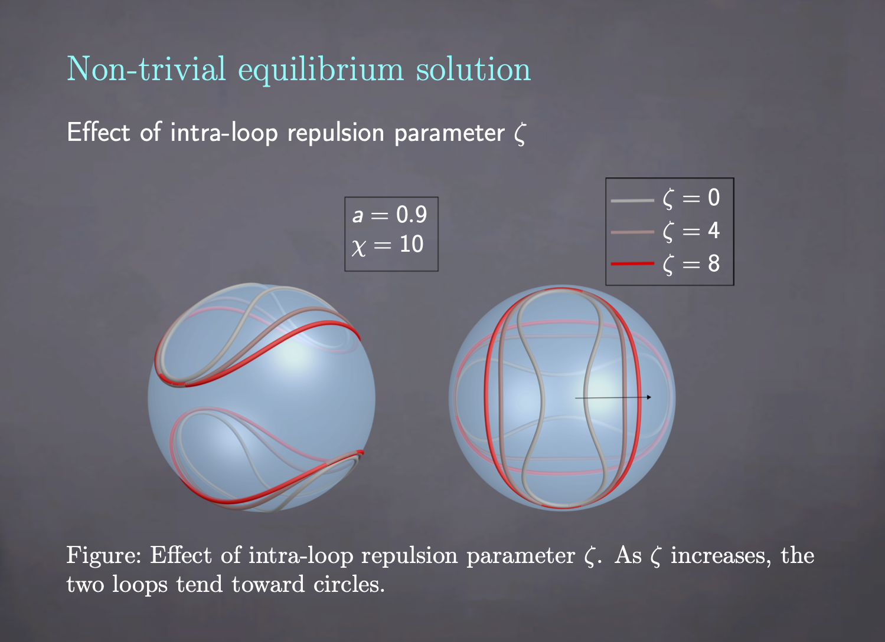
Increase in the intra-loop charge density \(\zeta\) on the loops increases intra-loop repulsion, yielding "opened" loop.
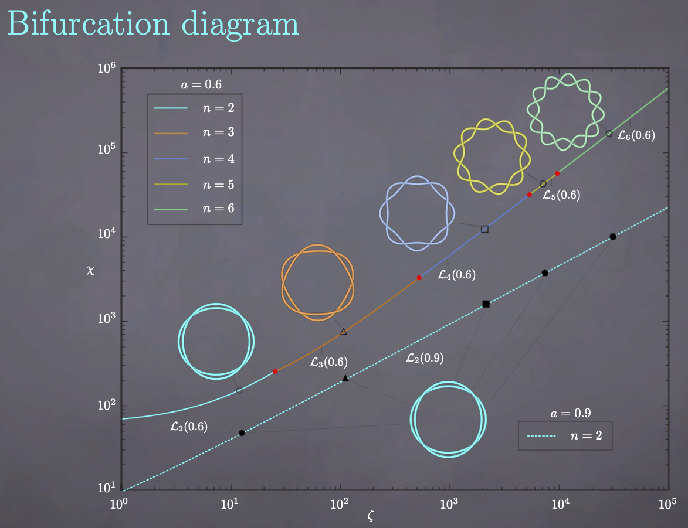
Bifurcation diagram, revealing that the first unstable mode could be 1,2,3, and so on, depending on the length of the loops and inter-loop and intra-loop charge densities, \(\chi\) and \(\zeta\), respectively.